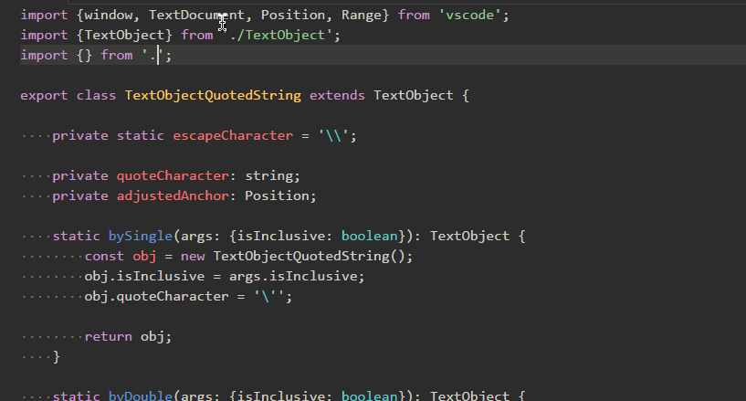

VS Code для вёрстки
Плагин Path Autocomplete для Visual Studio Code представляет собой незаменимый инструмент, который значительно упрощает работу с файловой структурой проекта. Он предоставляет пользователю интуитивно понятный и удобный способ получения доступа к файлам и папкам, устраняя необходимость ручного поиска и ввода путей к файлам.
Одной из ключевых особенностей этого плагина является автоматическое предложение возможного пути к файлу внутри кавычек. Это позволяет избежать неудобств, связанных с ручным поиском нужной папки в структуре проекта. Вместо того чтобы запоминать или искать путь к файлу вручную, Path Autocomplete автоматически предоставляет список доступных путей, которые могут быть вставлены с минимальными усилиями.
Этот плагин становится особенно полезным при работе с большими проектами, где файловая структура может быть сложной и глубокой. Он способствует повышению производительности, поскольку устраняет необходимость в постоянном переключении между файлами и папками вручную. Пользователи могут сосредоточить свое внимание на написании кода, а Path Autocomplete обеспечит быстрый и точный доступ к необходимым файлам, ускоряя процесс разработки.
